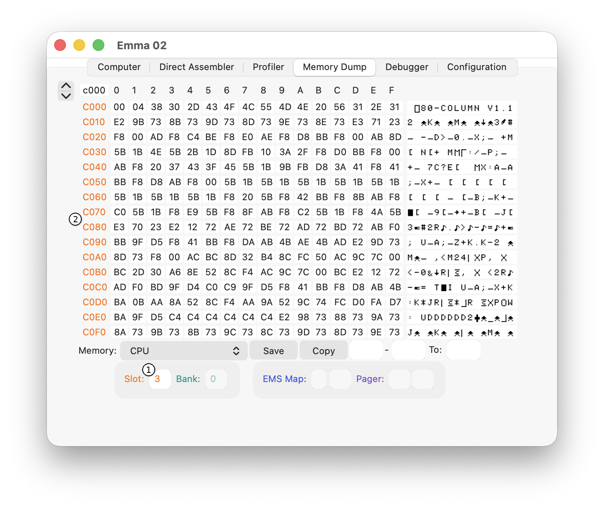
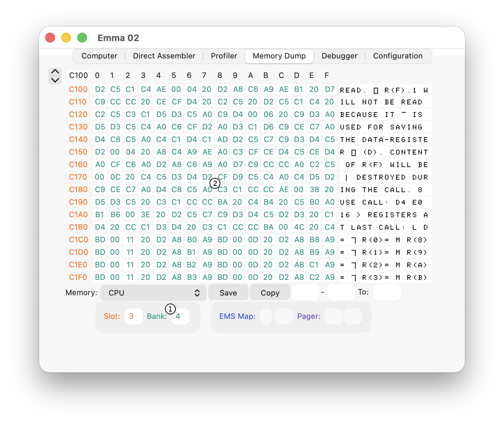
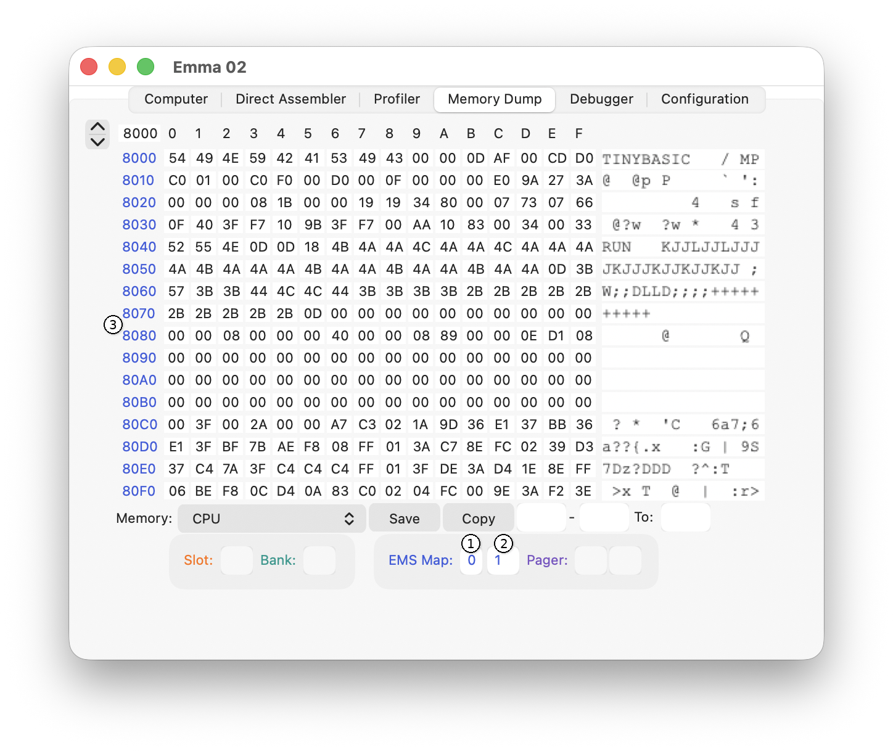
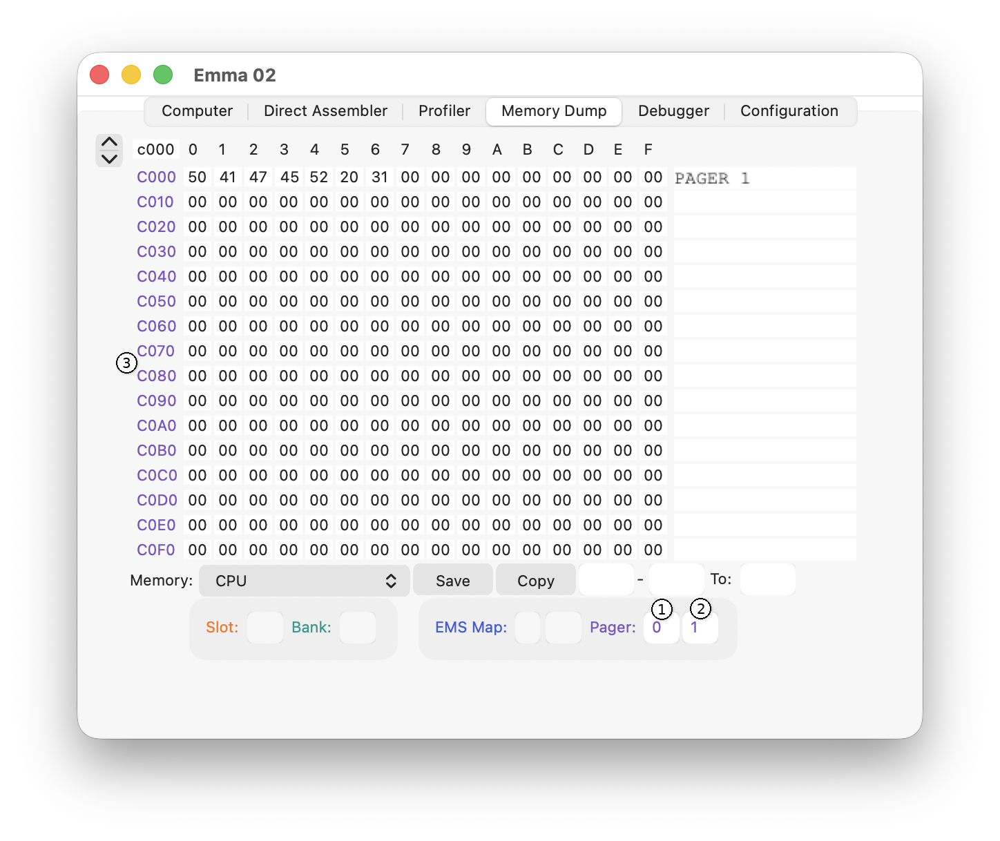

The Memory Dump tab with the COMX Slot interface is shown below:

To change the COMX expansion slot, use the Slot text field (1) - values 0 to 3. Expansion ROMs are connected from address C000 to DFFF and, when shown, the address range (2) will have the same colour as the Slot text field (1).
The Memory Dump tab with the COMX Bank interface is shown below:

When a slot with a memory expansion card is selected, select a bank using the Bank text field (1). The bank values depend on the card type: 0 to 3 for the 32K RAM card, 0 to 4 for the F&M EPROM Switchboard, and 0 to F (hexadecimal) for the COMX SuperBoard. The banks are connected from address C000 to DFFF and, when shown, the data values (2) will have the same colour as the Bank text field (1).
The Memory Dump tab with the EMS Map interface is shown below:

If multiple EMS mappers are defined, the EMS number text field (1) can be used to switch between them. Most systems will only use one EMS mapper; in that case the EMS number is 0.
To change the EMS page, use the EMS Map text field (2) - selectable values depend on the defined EMS configuration, maximum FF (hexadecimal). The EMS address range and location also depend on the EMS configuration and, when shown, the address range (3) will have the same colour as the EMS Map text fields (1) and (2).
The Memory Dump tab with the Memory Pager interface is shown below:

To change a Memory Pager, use the Pager fields (1) and (2). The first field (1) selects the switchable page (the values and size depend on the pager configuration) and the second field (2) selects the pager (values 0 to FF (hexadecimal)). The Memory Pager range and location depend on the configuration.
The address range (3) of the selected switchable pager page will have the same colour as the Pager text fields (1) and (2).